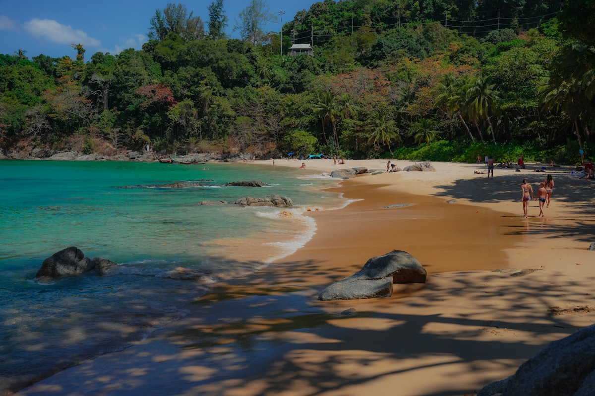
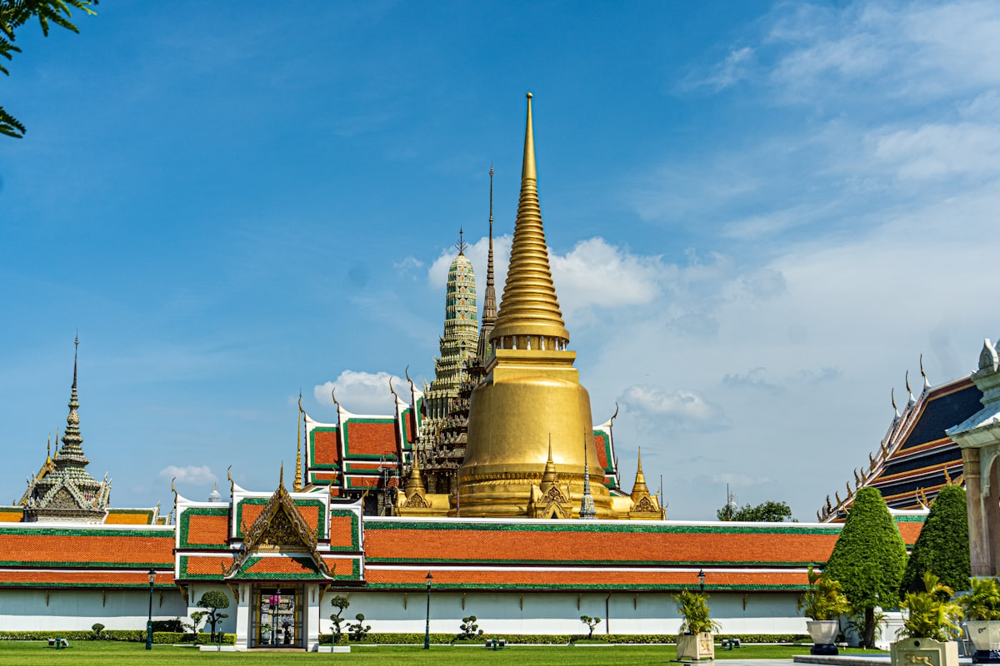
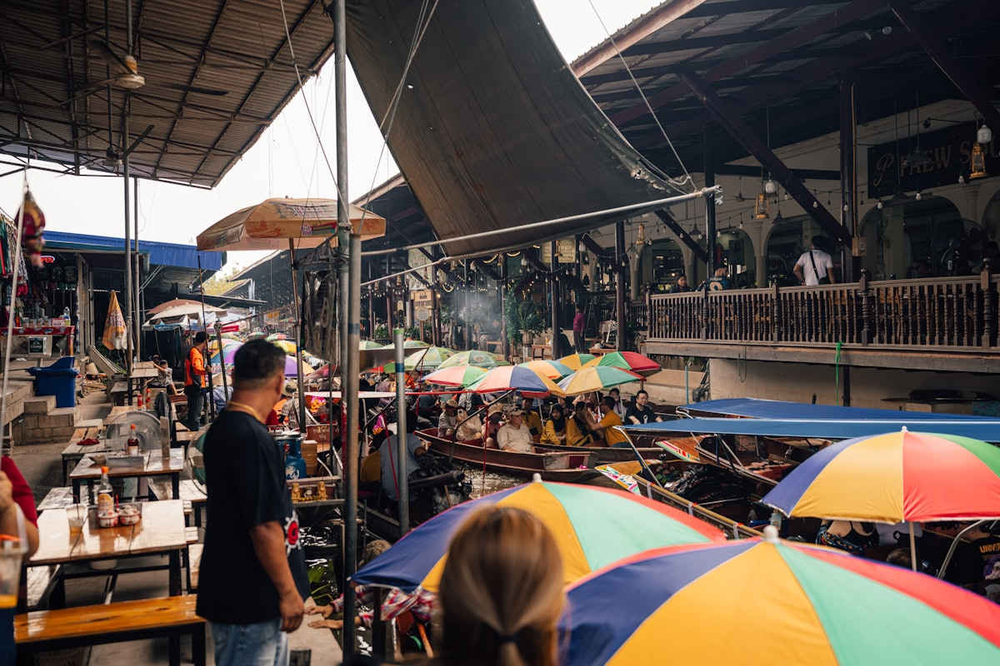
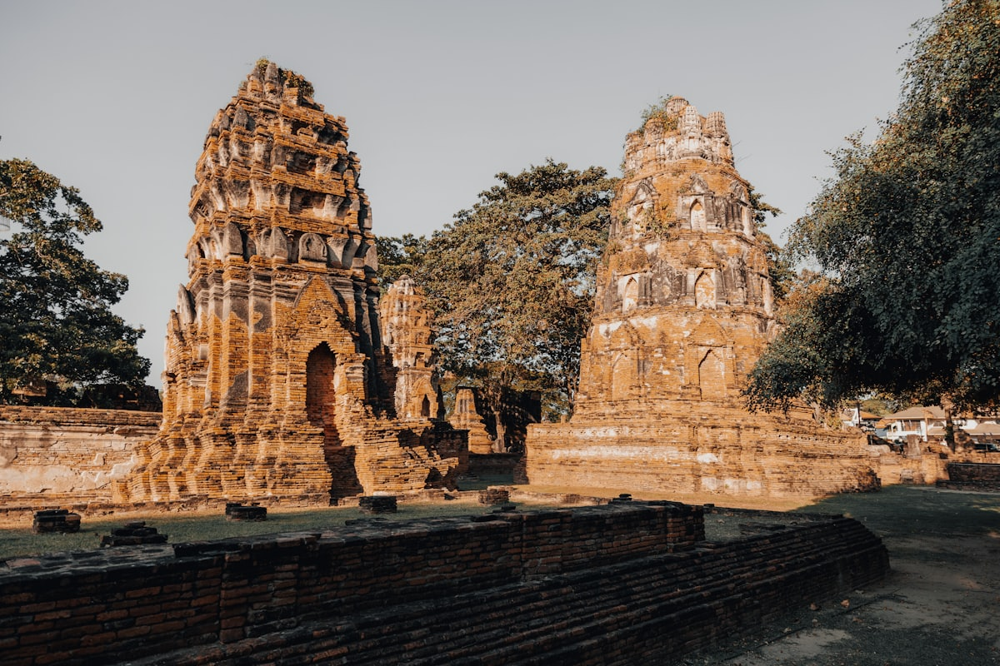
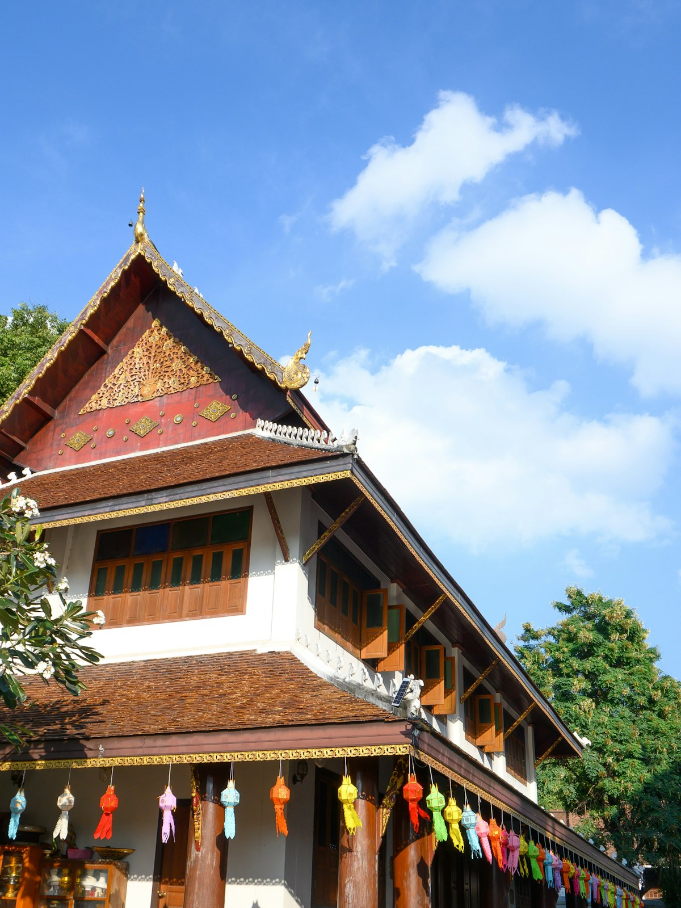
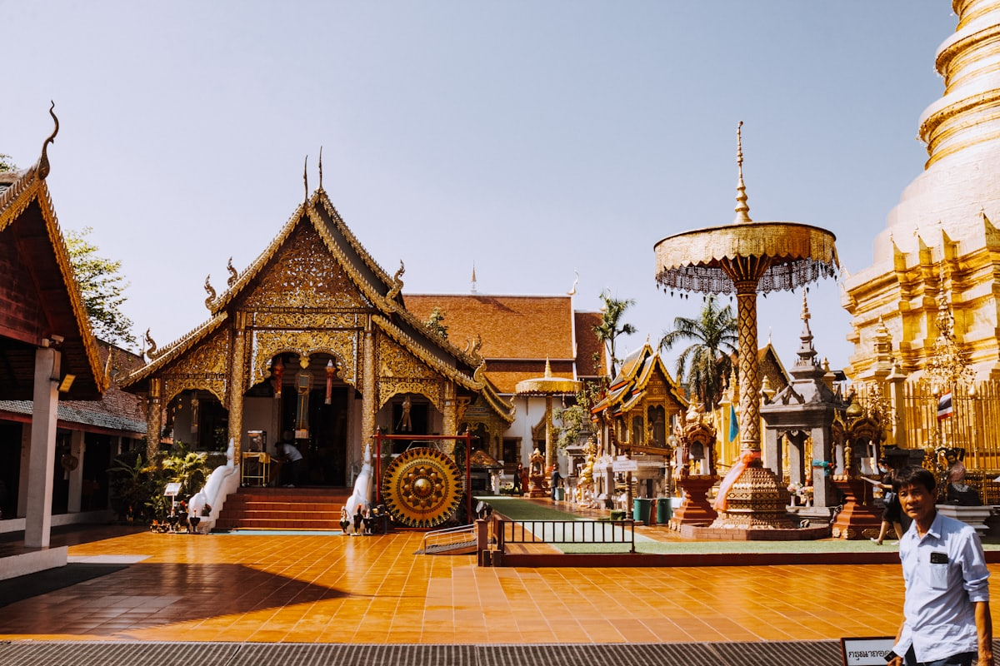
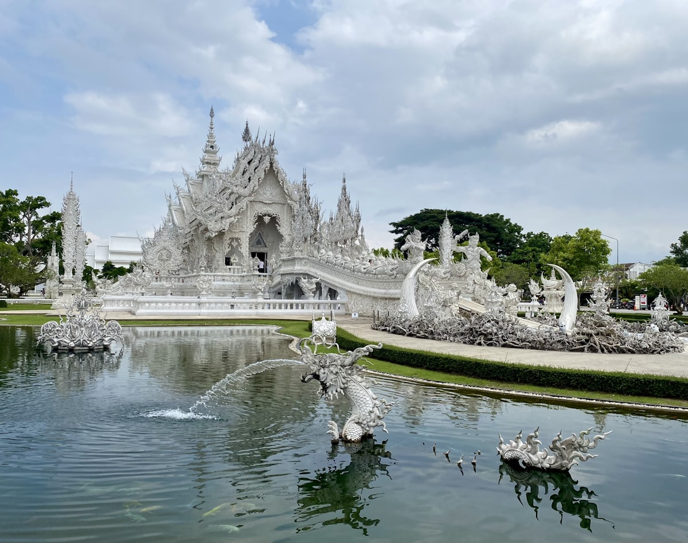
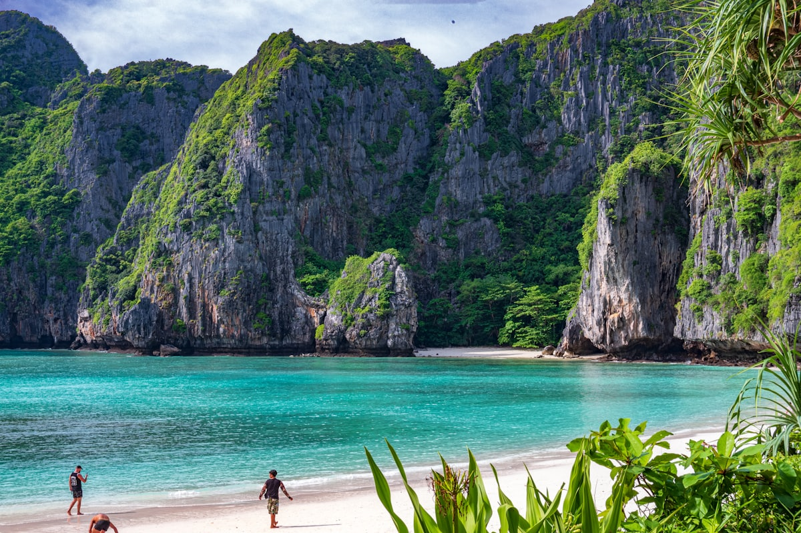

| 事项 | 结论 |
|---|---|
| 事项 | 结论 |
| 签证（最关键） | 中泰互免签证已生效：持普通护照免签入境，单次停留不超 30 天，15 天行程无忧（注意免签 ≠ 免登记，入境时出示返程机票与酒店订单） |
| 时差 | 比北京慢 1 小时（UTC+7），落地基本无时差感 |
| 电源插座 | 220V，A/B/C 型插座（两扁脚/两圆脚），需带转换插头，无需变压 |
| 货币 | 泰铢（THB），1 泰铢 ≈ 0.2 元人民币（约 5 泰铢 = 1 元），机场汇率差建议市区 SuperRich 换 |
| 推荐方案 | 曼谷 4 天（含大城）+ 清迈 3 天 + 清莱 2 天 + 普吉 5 天 + 返程 |
| 返程约束 | 普吉✈曼谷转机✈北京，或普吉直飞回国的航班较少，留足转机时间 |
| 行程链 | 曼谷 → 大城 → 清迈 → 清莱 → 普吉 → 返程 |
| 预算（人均） | 经济 11000–15000 ／ 标准 16000–22000 ／ 舒适 28000–40000（人民币） |
| 三件提前事 | ① 订曼谷—清迈、曼谷—普吉国内机票 ② 订皮皮岛/皇帝岛一日游 ③ 清迈大象营提前预约 |
| 季节提醒 | 11 月–次年 2 月凉季最佳；4 月中泼水节（宋干节）；6–10 月雨季海岛浪大快艇易取消 |
| 支付 | 现金泰铢为主 + Visa/Master 卡 + 部分支持银联/支付宝（7-11 与商场） |
以下为 15 天 14 晚的推荐节奏：曼谷都市与大城古迹打头，飞清迈体验泰北，再飞普吉收尾海岛度假。每日主景点 ≤2 个，交通以飞机 + 大巴 + 快艇为主。
| 日期 | 行程 | 过夜地 | 主题 |
|---|---|---|---|
| D1 抵曼谷 | 北京✈曼谷（约 5.5h），入住暹罗/素坤逸，傍晚唐人街耀华力路夜市 | 曼谷 | 抵达+预热 |
| D2 | 大皇宫+玉佛寺 → 卧佛寺 → 郑王庙 → 考山路夜市 | 曼谷 | 佛寺一日 |
| D3 | 丹嫩沙多水上市场 → 美功铁道市场 → 河滨夜市 Asiatique | 曼谷 | 水上+火车市场 |
| D4 | 大城一日：玛哈泰寺树抱佛头 → 崖差蒙空寺 → 帕司山碧寺 | 曼谷 | 古城遗迹 |
| D5 | 曼谷✈清迈：契迪龙寺 → 帕辛寺 → 塔佩门 → 长康夜市 | 清迈 | 飞清迈 |
| D6 | 素贴山双龙寺 → 蒲屏皇宫 → 清迈大学 → 宁曼路 | 清迈 | 泰北文化 |
| D7 | 大象保护营喂象 + 丛林飞跃（可选）→ 泰式按摩 | 清迈 | 亲近自然 |
| D8 | 清莱一日：白庙 → 蓝庙 → 黑屋博物馆，宿清莱 | 清莱 | 清莱三庙 |
| D9 | 清莱→曼谷转机→普吉，入住芭东，海滩漫步 | 普吉 | 飞普吉 |
| D10 | 皮皮岛一日游：玛雅湾 → 燕窝洞 → 浮潜 → 竹子岛 | 普吉 | 海岛日 |
| D11 | 皇帝岛快艇一日：白沙滩浮潜 → 深浅（可选） | 普吉 | 皇帝岛日 |
| D12 | 普吉镇老街 → 卡伦/卡塔海滩 → 神仙半岛日落 | 普吉 | 普吉镇+海滩 |
| D13 | 自由日：攀牙湾/海豚湾出海 或 酒店泳池休整 | 普吉 | 机动日 |
| D14 | 江西冷购物 + 芭东夜市 + 告别海鲜晚餐 | 普吉 | 购物日 |
| D15 返程 | 普吉✈曼谷转机✈北京（约 5.5h），入境到家 | — | 收尾 |
以下为 15 天全程的逐小时执行时间线，可当作「当天打开照着走」的清单。标注 ※ 的可选项视体力与天气取舍。
| 时间 | 事项 |
|---|---|
| 08:30–13:30 | 北京✈曼谷（直飞约 5.5h，比北京慢 1 小时）。落地素万那普机场（BKK），入境出示返程机票与酒店订单 |
| 13:30–15:30 | 机场取泰铢现金（少量应急，汇率一般）、买电话卡（True/AIS 约 300 泰铢 8 天无限流量），乘机场快线/出租车进市区 |
| 16:00–17:30 | 入住暹罗/素坤逸酒店，休息 + 换轻便夏装 |
| 18:30–21:30 | 晚餐：唐人街耀华力路夜市（燕窝、烤海鲜、鱼翅羹），或考山路逛夜市喝啤酒 |
| 时间 | 事项 |
|---|---|
| 08:00–11:30 | 大皇宫 + 玉佛寺（门票约 500 泰铢）：金碧辉煌的曼谷名片，着装要求遮肩遮膝 |
| 11:30–13:00 | 午餐：湄南河边泰餐或路边摊（冬阴功、泰式炒河粉） |
| 13:30–15:00 | 卧佛寺（约 300 泰铢）：46 米卧佛与泰式按摩发源地，可顺便预约校内按摩学院 |
| 15:30–17:00 | 郑王庙（约 100 泰铢）：河边白塔群，傍晚光线最好，摆渡船过河 2 分钟 |
| 18:00–21:00 | 考山路夜市（免费）：背包客街，路边按摩、扎脏辫、夜市小吃 |
| 时间 | 事项 |
|---|---|
| 06:30 | 包车/半日游出发丹嫩沙多水上市场（曼谷西南约 1.5h），越早人越少 |
| 07:30–10:00 | 丹嫩沙多水上市场：手摇船穿梭水道，船上买卖水果、船面、椰子冰淇淋（船票约 150–400 泰铢，记得砍价） |
| 10:30–12:00 | 美功铁道市场（免费）：火车穿市集奇观，提前查火车时刻表，进站瞬间摊贩秒收摊 |
| 12:30–14:00 | 午餐：海鲜炒粉/椰浆鸡汤 |
| 15:00–17:00 | 返回曼谷，酒店休息 |
| 18:30–21:30 | 河滨夜市 Asiatique（免费）：湄南河边摩天轮夜市，或乘湄南河夜游船 |
| 时间 | 事项 |
|---|---|
| 08:00 | 曼谷乘火车/大巴到大城府（约 1.5h），火车站附近租自行车或包嘟嘟车 |
| 09:30–12:00 | 玛哈泰寺（50 泰铢）：树抱佛头经典机位，拍照需蹲下以示尊敬 |
| 12:00–13:00 | 午餐：大城河畔泰餐 |
| 13:30–15:00 | 崖差蒙空寺（20 泰铢）：卧佛 + 可攀登的斜塔 |
| 15:00–16:30 | 帕司山碧寺 + 拉差布拉那寺（联票 50 泰铢）：三塔遗址与大城王朝王陵 |
| 17:00–19:00 | 乘火车返回曼谷，晚餐自由安排 |
| 时间 | 事项 |
|---|---|
| 08:00 | 早餐后退房，乘机场线到素万那普（或廊曼，看清机票是哪个机场） |
| 10:00–11:15 | 曼谷✈清迈（约 1h15，提前订约 200–500 元） |
| 12:00–13:00 | 入住清迈古城酒店，午餐：咖喱面 Khao Soi |
| 13:30–16:00 | 契迪龙寺（50 泰铢）：清迈最高古塔；帕辛寺（50 泰铢）：泰北最大寺庙 |
| 16:30–18:00 | 塔佩门（免费）：古城东门，广场喂鸽子出片 |
| 18:30–21:00 | 长康夜市（免费）：手工艺品 + 街头小吃，或周日夜市（周日傍晚开始占满古城主街） |
| 时间 | 事项 |
|---|---|
| 08:00 | 乘双条车/包车从清迈古城上素贴山（约 30–40min，山路弯多） |
| 09:00–11:00 | 双龙寺（素贴寺）（外国人约 50–100 泰铢）：金塔与「双龙」石阶，俯瞰清迈全城 |
| 11:00–12:00 | 蒲屏皇宫（约 50 泰铢）：王室夏宫，1 月–3 月花开最盛 |
| 12:30–14:00 | 午餐：山脚或山顶泰北料理 |
| 14:30–16:30 | 清迈大学（免费，观光车环线）+ 宁曼路（免费）：网红咖啡、手作店一条街 |
| 18:30–20:30 | 晚餐：宁曼路 or 古城猪脚饭，饭后水果市场补货 |
| 时间 | 事项 |
|---|---|
| 08:00 | 出发前往大象保护营（美莎大象营或大象自然公园，距清迈约 1h） |
| 09:00–12:00 | 大象营（约 500–1000 泰铢）：喂大象、给大象洗澡、丛林徒步看象群 |
| 12:00–13:00 | 午餐：营地或山间餐厅 |
| 13:30–16:00 | 丛林飞跃（可选，约 1500–2500 泰铢）：飞跃丛林滑索与高空栈道 |
| 17:00 | 返回清迈，泰式按摩 1–2 小时（约 300–600 泰铢）缓解疲劳 |
| 19:00 | 晚餐：泰北香肠、烤猪颈肉、青木瓜沙拉 |
| 时间 | 事项 |
|---|---|
| 08:00 | 清迈乘大巴/包车到清莱（约 3h，包车可途中停温泉休息区） |
| 11:30–13:00 | 白庙（灵光寺）（免费）：纯白寺庙 + 银镜碎片的「地狱之手」桥，清莱名片 |
| 13:00–14:00 | 午餐：清莱市区泰餐 |
| 14:30–16:00 | 蓝庙（免费）：深海蓝配色，内部壁画炫目；黑屋博物馆（约 80 泰铢）：黑色柚木屋群 |
| 16:30–18:00 | 清莱夜市/钟楼夜市自由逛，宿清莱 |
| 时间 | 事项 |
|---|---|
| 08:00 | 清莱乘飞机（经曼谷转机）或先大巴回清迈再飞普吉，全天以转场为主 |
| 13:00–14:30 | 入住普吉芭东海滩酒店，午餐：芭东街边泰餐 |
| 15:00–17:00 | 芭东海滩（免费）：踩水、日光浴、水上摩托 |
| 17:30–18:30 | 江西冷购物中心（免费）：买防晒、泳衣、手机防水袋 |
| 19:00–21:30 | 芭东夜市 + 班赞海鲜市场：现选海鲜上楼加工，龙虾螃蟹配冰啤 |
| 时间 | 事项 |
|---|---|
| 07:30 | 到普吉码头集合登船（一日游约 1000–1500 泰铢，含船+午餐+浮潜装备） |
| 09:30–12:00 | 皮皮岛：玛雅湾（《海滩》取景地）、燕窝洞、维京洞海上巡游 |
| 12:00–13:00 | 岛上自助午餐，自由海滩时间 |
| 13:30–16:00 | 竹子岛 + 大皮皮岛浮潜：清澈浅湾看热带鱼与珊瑚 |
| 17:00–18:30 | 乘船返回普吉，晚餐：芭东海鲜烧烤 |
| 时间 | 事项 |
|---|---|
| 08:00 | 乘快艇从普吉出发到皇帝岛（约 40–50min，快艇一日游约 1500–2500 泰铢） |
| 09:00–12:00 | 皇帝岛：白沙滩游泳、浮潜看珊瑚；岸上可租躺椅 |
| 12:00–13:00 | 岛上午餐（含餐） |
| 13:30–16:00 | 深浅体验（可选，约 2500 泰铢含装备）或继续浮潜，回程再停一个浮潜点 |
| 17:00 | 返回普吉，晚餐：卡伦海滩附近海鲜餐厅 |
| 时间 | 事项 |
|---|---|
| 09:00–12:00 | 普吉镇老街（免费）：中葡彩色骑楼，壁画街、周末夜市（周日） |
| 12:00–13:30 | 午餐：老街泰餐或娘惹菜 |
| 14:00–17:00 | 卡伦海滩/卡塔海滩（免费）：普吉最长的海滩与最安静的海湾之一 |
| 17:30–19:00 | 神仙半岛（免费）：日落观景点，普吉最南端 |
| 19:30 | 晚餐：卡塔/拉威海鲜市场现选现做 |
| 时间 | 事项 |
|---|---|
| 08:00 | 二选一：出发攀牙湾（约 2000–3000 泰铢）：海上桂林、007 岛、皮划艇穿溶洞 |
| 09:00–16:00 | 或酒店泳池休整：睡到自然醒，做 SPA、海滩发呆 |
| 16:00–17:30 | 午后去海边看落日，或补觉休整 |
| 18:30–21:00 | 晚餐：芭东夜市新店打卡，酒吧街体验（可选） |
| 时间 | 事项 |
|---|---|
| 09:00–12:00 | 江西冷 + 中央百货（免费）：药妆、boots/屈臣氏补货 |
| 12:00–13:30 | 午餐：商场内泰餐 |
| 14:00–17:00 | 普吉特产采购：腰果、燕窝、泰丝、乳胶枕、青草膏（认准正规店） |
| 18:00–21:00 | 告别海鲜晚餐：芭东或拉威海鲜市场，把想吃的都吃一遍 |
| 时间 | 事项 |
|---|---|
| 07:00–09:00 | 退房，乘出租车/预约车到普吉机场 |
| 10:00–11:30 | 普吉✈曼谷（约 1.5h），转机窗口留 3 小时以上 |
| 13:00–18:30 | 曼谷✈北京（直飞约 5.5h），机上休息 |
| 19:30 | 入境到家，行程结束 |
必去（必去）/ 顺路（顺路）/ 可跳过（可跳过）。

必去
必去
必去
必去
顺路
必去
必去图片为 Unsplash 主题图（大皇宫、水上市场、大城树抱佛头、双龙寺、契迪龙寺、白庙、皮皮岛、普吉海滩等均为泰国实景），用于页面配图。更多免费/低成本景点：美功铁道市场、塔佩门、郑王庙、清迈夜市、卡伦海滩。
点击左侧节点可在地图上定位；点击地图 marker 会高亮对应节点。坐标为 WGS-84 转 GCJ-02 纠偏后标注。
以下为单人、不含购物的估算，人民币计价；出发地基准北京。汇率按 1 泰铢 ≈ 0.2 元人民币估算（约 5 泰铢 = 1 元）。往返机票按淡季直飞 2800–4000 元计，旺季（11–2 月）会上浮。
| 项目 | 经济（11000–15000） | 标准（16000–22000） | 舒适（28000–40000） |
|---|---|---|---|
| 往返机票 | 北京⇄曼谷 2800–3500 | 直飞往返 3500–4500 | 直飞+分段升舱 6000–9000 |
| 住宿（14 晚） | 青旅/民宿 200–300/晚 | 三星/度假酒店 400–700/晚 | 海景度假村 1200–2500/晚 |
| 境内交通 | 国内三段机票+巴士 1000–1500 | 机票+船+包车 1800–2600 | 全段机票+包车 4000–6000 |
| 门票 | 基础景点约 500–800 | 含一日游/大象营约 1200–1800 | 全含+深浅+攀牙湾约 3000–4500 |
| 餐饮（15 天） | 夜市+路边摊 2000–3000 | 正常下馆子 3500–5000 | 海鲜大餐+高档餐厅 7000–12000 |
带娃推荐：曼谷暹罗海洋世界+杜莎夫人蜡像馆（预留 1 天）、清迈动物园、普吉换卡塔海滩（浪小适合娃）；砍掉攀牙湾与深浅，皮皮岛选大船而非快艇（孩子不晕）。3 岁以下多数景点免票，酒店选带泳池的度假村，行程节奏放慢到每日 1 个主景点。
安达曼海雨季浪大，皮皮岛/皇帝岛快艇常因天气取消：主方案调整为「曼谷 6 天 + 清迈 4 天 + 普吉 4 天」，海岛日预留机动；若普吉连续雨天，把 D13 机动日改成曼谷大城深度或换芭提雅（泰国湾浪小）。雨季酒店便宜 30–50%，机票也低。
| 方式 | 时长 | 参考价 | 备注 |
|---|---|---|---|
| 直飞（推荐） | 北京→曼谷约 5.5h | 往返 2800–4500 元 | 国航/泰航/海航，落地素万那普（BKK） |
| 转机 | 7–12h | 2500–4000 元 | 经香港/上海/深圳，便宜但费时 |
| 普吉直飞 | 北京→普吉约 6h | 往返 4000–7000 元 | 航班少，多数需在曼谷转机 |
| 区域 | 价格/晚 | 优点 | 短板 |
|---|---|---|---|
| 曼谷·暹罗/素坤逸 | 经济 250–400 / 标准 400–800 | BTS 沿线，购物餐饮集中 | 旺季贵，车多 |
| 曼谷·考山路 | 青旅 100–300 | 背包客氛围，便宜 | 吵，设施简单 |
| 清迈·古城内 | 经济 150–350 / 标准 350–700 | 寺庙步行可达，泰北风情 | 老房隔音一般 |
| 清莱·市区 | 经济 150–300 | 白庙蓝庙方便 | 可选少 |
| 普吉·芭东海滩 | 经济 250–400 / 标准 400–900 | 夜生活+海鲜市场 | 吵闹，人多 |
| 普吉·卡伦/卡塔 | 标准 500–1200 | 安静、浪小适合游泳 | 离夜市远，打车费高 |